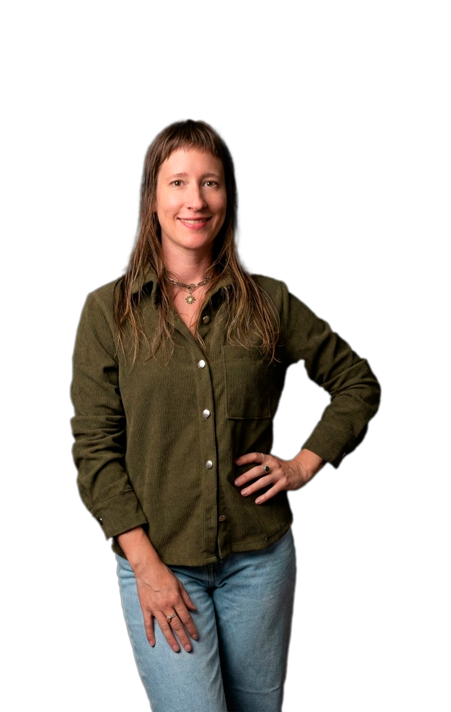

Hola, soy Ivana Kosak
Médica integral especialista en medicina integrativa, cannabis terapéutico y hongos medicinales.

Credenciales & camino recorrido
-
Médica (UBA)
Formación clínica de grado en la Universidad de Buenos Aires.
-
Posgrado en Medicina Integrativa (UNC)
Visión social, emocional y funcional de la salud.
-
Posgrado en Endocannabinología & Terapéutica Cannábica (AMA)
Uso clínico del cannabis con respaldo científico.
-
Tratamientos con hongos medicinales
Aplicación clínica de adaptógenos fúngicos.
-
Posgrado en Manejo Integral del Estrés y Sistema Nervioso Autónomo
Regenera Health, España.
-
REPROCANN
Acompañamiento certificado para el registro de cannabis medicinal.
-
Matrícula MP 8318
Ejercicio profesional habilitado en Río Negro, Argentina.
Actualmente me desarrollo como profesional en Roca, Río Negro — Argentina. Realizo consultas de manera presencial, online o a domicilio de acuerdo a las necesidades de cada paciente.
Compartir lo aprendido, fomenta bienestar
Mi compromiso con la educación se refleja en capacitaciones especializadas que exploran el potencial clínico de los adaptógenos, los enteógenos y el cannabis medicinal desde una perspectiva integrativa. Además, dirijo un programa integral de atención orientado a residencias de larga estadía, enfocado en dignificar la salud de nuestros adultos mayores.
Contactame